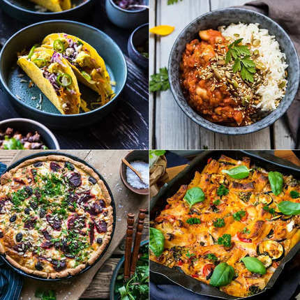

Översikt
Portalen erbjuder noggrant utvalda, proteintäta vegetariska recept utformade för att stötta en aktiv och hållbar livsstil.
PowerPlantVarmt välkommen till vår webbplats! Vår vision är att möjliggöra effektiv muskeluppbyggnad och optimal hälsa helt utan nyttjande av animaliska produkter. |
 |
Portalen erbjuder noggrant utvalda, proteintäta vegetariska recept utformade för att stötta en aktiv och hållbar livsstil.